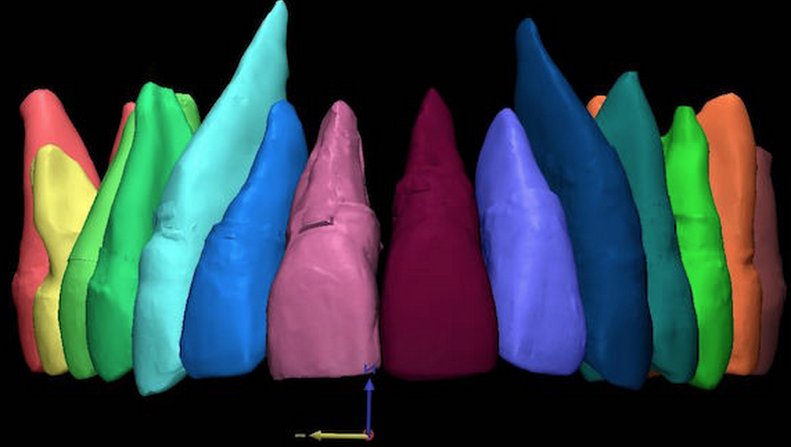
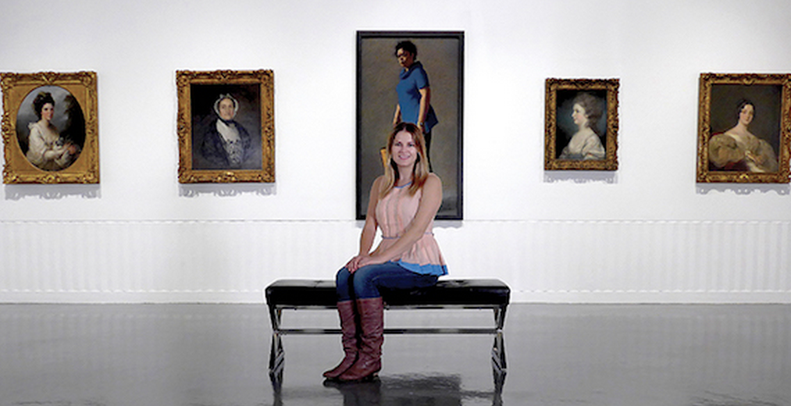
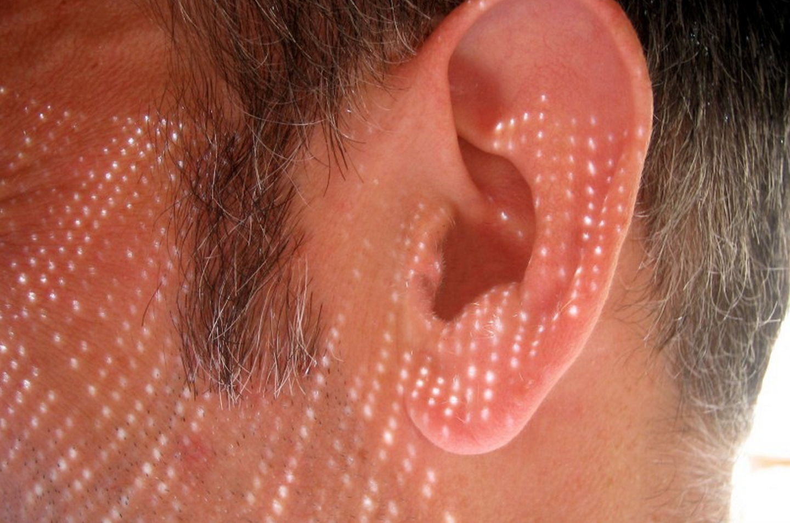

|
It’s officially the Los Angeles Times Festival of Books, but the April 18-19 event was more like a big block party. Some 150,000 people - including Billy Idol, Candice Bergen, Joyce Carol Oates and at least one person dressed as a butterfly - joined in the fun. |
View details » |
|  |
Anyone who’s had traditional braces has no doubt wished for a more comfortable, convenient and aesthetically pleasing alternative. |
View details » |
|  |
In third grade, Lyssa Aruda received a Harry Potter potions kit. The gift thrilled her to no end. Science, especially chemistry, physics and math, has long fascinated her. |
View details » |
|  |
An international team led by Keck Medicine of USC neuroscientists has found evidence that some people may be more genetically susceptible to noise-induced hearing loss. Such loss is one of the most common work-related illnesses in the United States. |
View details » |